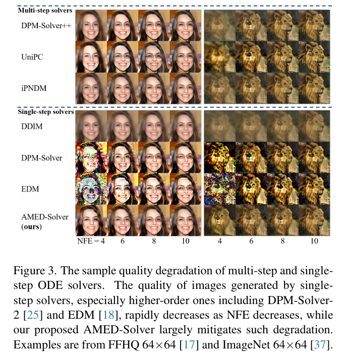
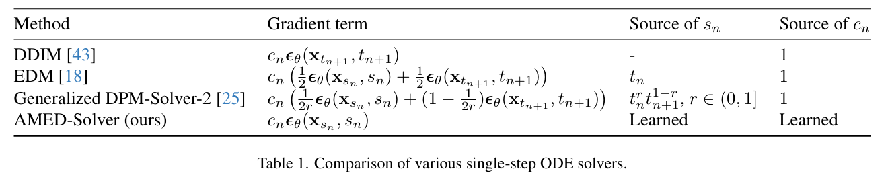
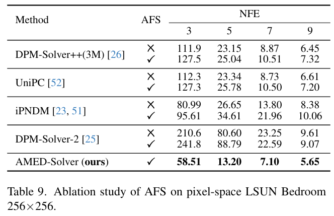
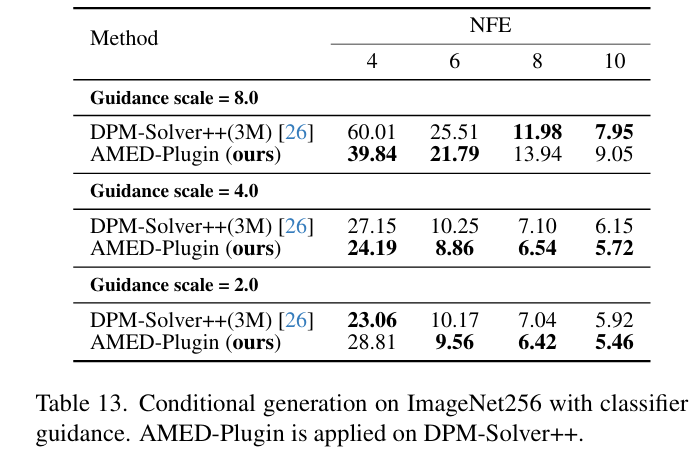

全文翻译
摘要
从扩散模型中采样可被视为求解相应的常微分方程（ODE），目标是在尽可能少的函数评估次数（NFE）下获得精确解。最近，各种利用高阶ODE求解器的快速采样器不断涌现，其性能优于最初的一阶采样器。然而，这些数值方法本身会产生一定的近似误差，在NFE极少（例如约5次）的情况下，会显著降低样本质量。相比之下，基于几何观察发现，每条采样轨迹几乎都位于嵌入环境空间的二维子空间中，我们提出了近似平均方向求解器（AMEDSolver），通过直接学习快速扩散采样的平均方向来消除截断误差。此外，我们的方法可轻松用作插件，进一步提升现有的基于ODE的采样器性能。在分辨率从32到512的图像合成实验中，大量实验证明了我们方法的有效性。仅需5次NFE，我们在CIFAR-10数据集上实现了6.61的FID（弗雷歇 inception距离），在64×64分辨率的ImageNet数据集上达到10.74的FID，在LSUN卧室数据集上获得13.20的FID。我们的代码可在https://github.com/zju-pi/diff-sampler获取。
1. 引言
近年来，扩散模型因其出色的生成能力而备受关注[9, 34, 36, 38]。给定一个噪声输入，它们能够通过使用分数函数执行迭代去噪步骤来生成逼真的输出[15, 42, 45]。这个过程可以解释为对随机微分方程（SDE）进行某种数值离散化，或者更常见的是，对其相应的概率流常微分方程（PF-ODE）进行数值离散化[45]。与生成对抗网络（GANs）[12]和变分自编码器（VAEs）[19]等其他生成模型相比，扩散模型在样本质量高和训练稳定方面具有优势，但采样速度较慢，这对其应用构成了巨大挑战。
| 图1：使用默认无分类器引导尺度7.5和文本提示“草地上的一只柯基犬，周围环绕着一群彩色气球”，由Stable-Diffusion[34]合成的图像。我们的方法在样本质量上改进了DPM-Solver++(2M)[26]。 |
现有的加速扩散采样方法主要分为两大流派。一类是设计更快的数值求解器，在保持较小截断误差的同时增大步长[10, 18, 23, 25, 43, 51]。它们可进一步分为单步求解器和多步求解器[2]。前者仅使用当前时间步的信息来计算下一步的解，而后者则利用多个过去时间步的信息。这些方法成功地将函数评估次数（NFE）从1000次减少到20次以下，几乎不影响样本质量。另一类方法旨在基于知识蒸馏的思想，在数据分布和预先指定的噪声分布之间建立一对一映射[4, 24, 27, 39, 46]。有了训练良好的学生模型后，仅需一次NFE就能实现高质量的生成。然而，训练这样的学生模型，要么需要预先生成数百万张图像[24, 27]，要么需要通过精心修改训练过程来承担巨大的训练成本[4, 39, 46]。此外，基于蒸馏的模型无法保证随着NFE的增加样本质量会提高，并且它们在似然评估方面也存在困难。
在本文中，我们进一步推动基于ODE的扩散模型采样，使其在大约5步内完成。基于每个采样轨迹大致位于嵌入高维空间的二维子空间这一几何特性，我们提出了近似平均方向求解器（AMED-Solver），这是一种单步ODE求解器，用于学习预测每个采样步骤中的平均方向。图2展示了各种ODE求解器的比较。我们还将我们的方法扩展为一个插件，可应用于任何ODE求解器。当在改进的PNDM求解器[51]上应用AMED-Plugin时，我们在CIFAR-10数据集上实现了6.61的FID，在64×64分辨率的ImageNet数据集上达到10.74的FID，在LSUN卧室数据集上获得13.20的FID 。我们的主要贡献如下：
- 我们引入了
AMED-Solver，这是一种新的用于扩散模型的单步ODE求解器，从设计上消除了截断误差。 - 我们提出了
AMED-Plugin，它可以应用于任何ODE求解器，训练开销小，采样开销可忽略不计。 - 在各种数据集上的大量实验验证了我们的方法在快速图像生成中的有效性。
| 图2：各种ODE求解器的比较。红点表示不同求解器的实际采样步骤。(a) DDIM求解器[43]对PF-ODE应用欧拉离散化。在每个采样步骤中，它沿着梯度方向给出下一步的解。(b) 多步求解器[23, 26, 51, 52]需要当前梯度和几个历史梯度记录，然后沿着这些梯度的组合方向给出解。(c) 在广义DPM-Solver-2[25]中，有一个超参数r控制中间时间步的位置。r = 0.5时恢复为默认的DPM-Solver-2，r = 1时恢复为Heun的第二种方法[18]。采样步骤的梯度由中间和当前时间步的梯度组合给出（见表1）。(d) 我们提出的AMED-Solver试图找到中间时间步和缩放因子，以给出接近最优的指向真实解的梯度。用于采样步骤的这个梯度是自适应学习得到的，而不像DPM-Solver-2那样通过启发式方法分配。 |
2. 背景
2.1 扩散模型
正向扩散过程可以形式化为一个随机微分方程（SDE）：
其中，$f(\cdot, t): \mathbb{R}^d \to \mathbb{R}^d$和$g(\cdot): \mathbb{R} \to \mathbb{R}$分别是漂移系数和扩散系数，$w_t \in \mathbb{R}^d$是标准维纳过程[31]。这个正向过程形成了一个连续的随机过程$\{x_t\}_{t = 0}^T$以及相关的概率密度$\{p_t(x)\}_{t = 0}^T$。为了使从隐式数据分布$p_d = p_0$中采样得到的样本$x_0$近似服从预先指定的噪声分布，即$p_T \approx p_n$ 。给定一个编码$x_T \sim p_n$，然后通过反转公式（1）来进行生成过程[1, 11]。值得注意的是，存在一个概率流常微分方程（PF - ODE）：
它与反向SDE具有相同的边缘分布[29, 45]，并且$\nabla_x \log p_t(x)$被称为分数函数[16, 28]。通常，由于其概念简单、采样效率高以及独特的编码方式，PF - ODE在实际应用中更受青睐[45]。在本文中，我们遵循EDM[18]的配置，设置$f(x, t) = 0$，$g(t) = \sqrt{2t}$以及$\sigma(t) = t$ 。在这种情况下，$t^2$的倒数等于信噪比[20]，并且扰动核为：
为了模拟PF - ODE，我们通常训练一个U - Net[15, 35]来预测$s_{\theta}(x, t)$，以近似难以处理的$\nabla_x \log p_t(x)$ 。文献中主要有两种参数化方式。一种使用噪声预测模型$\epsilon_{\theta}(x, t)$——预测在时间$t$添加到$x$上的高斯噪声[15, 43]，另一种使用数据预测模型$D_{\theta}(x, t)$——预测从时间$t$到$0$对$x$的去噪输出[6, 18, 26]。在我们的设置中，它们具有以下关系：
在噪声预测表示下，扩散模型的训练是通过最小化最小二乘估计的加权组合来进行的：
然后，我们将学习到的分数函数公式（4）代入公式（2），得到PF - ODE的一个简单形式：
采样轨迹$\{x_{t_n}\}_{n = 1}^N$的获取方式是，首先从$p_n = N(0, T^2I)$中抽取$x_{t_N}$，然后按照时间序列$\Gamma = \{t_1 = \epsilon, \cdots, t_N = T\}$，通过$N - 1$步求解公式（6）。
2.2 先前快速ODE求解器的分类
为了加速扩散采样，人们提出了各种快速ODE求解器，这些求解器可以分为单步求解器和多步求解器[2]。单步求解器包括DDIM[43]、EDM[18]和DPM - Solver[25]，它们仅使用当前时间步的信息来计算下一步的解；而多步求解器包括PNDM[23]和DEIS[51]，它们利用多个过去时间步的信息来计算下一步的解（直观比较见图2）。我们强调，应该将单步ODE求解器与单步（$NFE = 1$）基于蒸馏的方法[27, 39, 46]区分开来。
单步方法的优点在于易于实现且能够自启动，因为不需要历史记录。然而，如图3所示，它们存在样本质量快速下降的问题，尤其是在NFE预算有限的情况下。原因可能是，在相同的NFE下，多步求解器的实际采样步数是单步求解器的两倍，这使得它们能够更频繁、更灵活地调整方向。我们将展示，我们提出的AMED - Solver可以通过学习平均方向在很大程度上解决这个问题。
|  |
|---|
| 图3：多步和单步ODE求解器的样本质量下降情况。单步求解器生成的图像质量，尤其是包括DPM-Solver2[25]和EDM[18]在内的高阶单步求解器，随着NFE的减少而迅速下降，而我们提出的AMED-Solver在很大程度上缓解了这种下降。示例来自FFHQ 64×64[17]和ImageNet 64×64[37]。 |
3. 我们提出的AMED-Solver
在本节中，我们提出AMED-Solver，这是一种用于扩散模型的单步ODE求解器，它释放了单步求解器在极小NFE情况下的潜力，使其能够达到甚至超越多步求解器的性能。此外，我们提出的方法可以作为插件推广到任何ODE求解器上，在各种数据集上都能带来显著的性能提升。我们的关键发现是，由公式$(6)$生成的采样轨迹几乎位于嵌入高维空间的二维子空间中，这启发我们利用均值定理来最小化离散化误差。
3.1 采样轨迹几乎位于二维子空间
如先前工作[6]所示，通过求解公式(6)生成的采样轨迹展现出极为简单的几何结构，并且与退火平均偏移存在隐含联系。从噪声分布出发的每个样本，都会沿着一条平滑的、近似线性的采样轨迹，以单调增加似然的方式逼近数据流形。此外，无论是在条件生成还是无条件生成的情况下，来自不同初始点的所有轨迹都具有相似的几何形状[6]。
在本文中，我们进一步指出，由ODE求解器生成的采样轨迹几乎位于嵌入高维空间的二维平面内。我们通过对不同数据集（包括CIFAR10 32×32[21]、FFHQ 64×64[17]、ImageNet 64×64[37]和LSUN Bedroom 256×256[50]）上的1000条采样轨迹进行主成分分析（PCA），对这一论断进行了实验验证。如图4所示，使用前两个主成分的相对投影误差不超过8%，并且始终保持在较低水平。此外，仅用两个主成分就可以完全解释样本方差。考虑到图像空间维度巨大，分别为3072（$3×32×3$）、12288（$3×64×6$）或196608（$3×256×25$），采样轨迹呈现出一种有趣的特性，即它们的动态变化几乎可以仅用两个主成分来描述。
| 图4. 我们对每条采样轨迹$\{x_t\}_{t=\epsilon}^{T}$进行主成分分析（PCA）。(a) 将这些轨迹投影到由前两个主成分张成的二维子空间中，得到$\{\overline{x}_t\}_{t=1}^{T}$，相对投影误差计算为$ \parallel x_t - \tilde{x}_t \parallel _2 / \parallel x_t \parallel _2 $。(b) 我们逐步增加主成分的数量，并计算累积方差百分比为$Var(\{\tilde{x}_t\}_{t=\epsilon}^{T}) / Var(\{x_t\}_{t=\epsilon}^{T})$。结果通过使用EDM求解器[18]对1000条采样轨迹进行平均得到，其中函数评估次数（NFE）为80次。 |
3.2 近似平均方向求解器
基于上述几何直观，接下来我们将更详细地解释我们的方法。公式$(6)$的精确解为：
对上述积分的各种数值近似对应着不同类型的基于快速ODE的求解器。例如，直接显式矩形法得到DDIM[43]，线性多步法得到PNDM[23]，泰勒展开得到DPM-Solver[25]，多项式外推得到DEIS[51]。与这些工作不同，我们更直接地推导我们的方法，期望积分所涉及的均值定理成立，这样我们就可以找到一个中间时间步$s_n \in (t_n, t_{n + 1})$和一个缩放因子$c_n \in \mathbb{R}$，满足：
虽然实值函数的著名均值定理在向量值情况下并不成立[7]，但采样轨迹$\{x_t\}_{t=\epsilon}^T$几乎位于二维子空间这一显著的几何性质保证了我们的使用。通过适当选择$s_n$和$c_n$，我们能够通过下式对公式$(7)$进行近似：
这个公式给出了一种单步ODE求解器。当设置$s_n = \sqrt{t_n t_{n + 1}}$且$c_n = 1$时，可以恢复DPM-Solver-2[25]。在表1中，我们通过将$c_n \epsilon_{\theta}(x_{s_n}, s_n)$概括为梯度项，对各种单步求解器进行了比较。
|  |
|---|
| 表1. 各种单步ODE求解器的比较。 |
对于$\{s_n\}_{n = 1}^{N - 1}$和$\{c_n\}_{n = 1}^{N - 1}$的选择，我们基于蒸馏训练一个浅层神经网络$g_{\phi}$（称为AMED预测器），其训练成本较低且采样成本可忽略不计。简而言之，给定教师采样轨迹上的样本$y_{t_n}$、$y_{t_{n + 1}}$和学生采样轨迹上的$x_{t_{n + 1}}$，$g_{\phi}$给出使$d(x_{t_n}, y_{t_n})$最小化的$s_n$和$c_n$，其中$x_{t_n}$由公式$(9)$给出，$d(\cdot, \cdot)$是一种距离度量。由于我们试图找到最能近似公式$(8)$中积分的平均方向，因此我们将所提出的单步ODE求解器公式$(9)$命名为近似平均方向求解器（Approximate MEan - Direction Solver），简称为AMED - Solver。在详细说明训练和采样细节之前，我们先将我们的想法推广为现有快速ODE求解器的插件。
3.3 AMED作为插件
AMED的思想可用于进一步改进现有的扩散模型快速ODE求解器。在我们的分析中，我们以多项式时间调度[18]为例：
需要注意的是，另一种常用的均匀对数信噪比（logSNR）调度实际上是公式$(10)$中$\rho$趋于正无穷时的极限情况。
给定一个时间调度$\Gamma = \{t_1 = \epsilon, \cdots, t_N = T\}$，AMED - Solver通过在$s_n \in (t_n, t_{n + 1})$（$n = 1, \cdots, N - 1$）进行额外的模型评估来实现。同样地，我们可以通过预测$\{s_n\}_{n = 1}^{N - 1}$和$\{c_n\}_{n = 1}^{N - 1}$来改进任何ODE求解器，使学生和教师采样轨迹达到最佳对齐。
我们通过一个实验对此进行验证。在实验中，我们固定$c_n = 1$，首先使用Heun的第二种方法，以80次NFE生成一个真实轨迹$\{x_{t_n}^G\}_{n = 1}^N$，并在$\Gamma$处提取样本。对于每个ODE求解器，我们按照DPM - Solver - 2[25]的做法，在$s_n = \sqrt{t_n t_{n + 1}}$处进行评估，生成一个基线轨迹$\{x_{t_n}^B\}_{n = 1}^N$。然后，我们对$r_n$进行网格搜索，得到$s_n = t_n^{r_n}t_{n + 1}^{1 - r_n}$和一个搜索轨迹$\{x_{t_n}^S\}_{n = 1}^N$。我们将相对对齐度定义为$\left|x_{t_n}^B - x_{t_n}^G\right|_2 - \left|x_{t_n}^S - x_{t_n}^G\right|_2$。正的相对对齐度值表明搜索轨迹$\{x_{t_n}^S\}_{n = 1}^N$比基线轨迹$\{x_{t_n}^B\}_{n = 1}^N$更接近真实轨迹$\{x_{t_n}^G\}_{n = 1}^N$。如图5所示，相对对齐度值在大多数情况下保持为正，这意味着适当选择中间时间步可以进一步改进快速ODE求解器。因此，如3.2节所述，我们还训练一个AMED预测器来预测中间时间步以及方向缩放因子。由于这个过程仍然具有寻找指向真实解方向的意义，我们将这种方法命名为AMED - Plugin，并将其应用于各种快速ODE求解器。
通过图5，我们可以直接比较DPM - Solver - 2和我们提出的AMED - Solver，因为当$r$固定为0.5时，它们具有相同的基线轨迹。我们的AMED - Solver与真实解的对齐更好，并且搜索得到的中间时间步的位置比DPM - Solver - 2稳定得多。我们推测，DPM - Solver - 2受固定$r$限制的梯度方向（见表1）不是最优的。相反，学习得到的系数为AMED - Solver提供了更大的灵活性，以确定更好的梯度方向。
| 图5：搜索中间时间步的有效性。给定时间调度$\Gamma = \{t_1 = \epsilon, \cdots, t_N = T\}$，其中$\epsilon = 0.002$，$T = 80$，$N = 6$，我们首先生成一个真实轨迹。对于每个ODE求解器，我们通过在$s_n = \sqrt{t_n t_{n + 1}}$处进行评估生成一个基线轨迹，并通过对$r_n$进行贪婪网格搜索得到$s_n = t_n^{r_n}t_{n + 1}^{1 - r_n}$，从而生成一个搜索轨迹。 |
3.4 训练和采样
由于来自不同采样轨迹的样本趋近于不对称的数据流形，它们当前的位置应该对相应的轨迹曲率有所贡献[6]。为了在不增加额外计算开销的情况下识别样本位置，我们在每次评估预训练的U - Net模型后提取其瓶颈特征。然后，我们将当前和下一个时间步$t_{n + 1}$和$t_n$以及瓶颈特征$h_{t_{n + 1}}$作为AMED预测器$g_{\phi}$的输入，以预测中间时间步$s_n$和缩放因子$c_n$。形式上，我们有：
网络架构如图6所示。
 |
|---|
| 图6：网络架构。给定U - Net模型在时间$t_{n + 1}$提取的瓶颈特征，我们进行通道均值池化，并将其通过两个全连接层。它与时间嵌入连接，再经过一个额外的全连接层和一个sigmoid函数，输出$r_n$和$c_n$。然后中间时间步由$s_n = t_n^{r_n}t_{n + 1}^{1 - r_n}$给出。 |
至于从时间$t_{n + 1}$到$t_n$的采样，我们首先在$t_{n + 1}$处进行一次U - Net评估，并提取瓶颈特征$h_{n + 1}$以预测$s_n$和$c_n$。对于AMED - Solver，我们通过从$t_{n + 1}$到$s_n$的欧拉步得到$x_{s_n}$，然后使用公式$(9)$得到$x_{t_n}$。当在其他ODE求解器上应用AMED - Plugin时，我们按照原始求解器的采样过程从$t_{n + 1}$步进到$s_n$，再从$s_n$步进到$t_n$，并且$c_n$用于缩放后一步的方向。因此，总NFE为$2(N - 1)$。我们将从$t_{n + 1}$到$t_n$的这样一个采样步表示为：
其中$\Lambda_n$是在这一步中引入的中间时间步$s_n \in (t_n, t_{n + 1})$和缩放因子$c_n$的集合。
$g_{\phi}$的训练基于知识蒸馏，这需要在$\Gamma$处评估的学生和教师采样轨迹，分别表示为$\{x_{t_n}\}_{n = 1}^N$和$\{y_{t_n}\}_{n = 1}^N$。然后，我们将生成学生和教师轨迹的采样过程分别表示为$\Phi_s$（带有$\Lambda_n^s = \{s_n, c_n\}$）和$\Phi_t$（带有$\Lambda_n^t$）。由于教师轨迹需要更多的NFE来提供可靠的参考，我们将中间时间步设置为按照原始时间调度在$t_n$和$t_{n + 1}$之间进行$M$步插值。以多项式调度为例，我们设置$\Lambda_n^t = \{s_n^1 \cdots, s_n^M, c_n^1 = 1 \cdots, c_n^M = 1\}$，其中：
我们使用两个轨迹上样本之间的距离度量$d(\cdot, \cdot)$来训练$g_{\phi}$，其中$\{s_n, c_n\}$由$g_{\phi}$预测：
在一个训练循环中，我们首先在$t_N$处生成一批噪声图像和教师轨迹。然后，我们计算损失，并从$t_{N - 1}$到$t_1$逐步更新$g_{\phi}$。因此，在一个训练循环中应用$N - 1$次反向传播。训练和采样算法分别在算法1和算法2中给出。
| 算法1 | 算法2 |
与之前的研究发现（当t较大时，采样轨迹近乎直线 ）类似，我们注意到在时间$t_N$处的梯度项$\epsilon_{\theta}(x_{t_{N}}, t_{N})$与$x_{t_{N}}$的方向几乎相同。因此，为节省一次函数评估次数（NFE），我们在首次采样步骤中直接将$x_{t_{N}}$用作方向，这在NFE预算有限的情况下尤为重要。该技巧被称为解析首步（AFS） 。我们发现，对于低分辨率的数据集，应用AFS对样本质量的影响微乎其微，甚至还能提升样本质量。
受同期研究成果[49]的启发，当在分辨率较小（32×32和64×64）的数据集上，将我们的AMED-Plugin应用于DDIM[43]、iPNDM[51]和DPM-Solver++ [26]时，我们可以选择通过$g_{\phi}$额外训练时间缩放因子$\{a_{n}\}_{n = 1}^{N - 1}$，以拓展解空间。给定$a_{n}$ ，在向$t_{n}$步长推进时，我们使用$\epsilon_{\theta}(x_{s_{n}}, a_{n}s_{n})$代替$\epsilon_{\theta}(x_{s_{n}}, s_{n})$，在某些情况下，这一做法提升了实验结果。
3.5 与基于蒸馏的方法比较
尽管我们提出的AMED-Solver是一种基于求解器的方法，但它与基于蒸馏的方法有着相似的原理。主要区别在于，基于蒸馏的方法最终通过微调预训练模型或从头开始训练新的预测模型，构建从噪声到数据分布的映射[6, 27, 39, 46]，而我们的AMED-Solver仍然遵循求解ODE的本质，构建从噪声到图像的概率流。基于蒸馏的方法仅通过一次NFE就能实现高质量生成，展现出令人瞩目的成果[46]。然而，这些方法在训练上需要付出巨大努力。人们需要精心设计训练细节，并且训练模型通常需要花费大量时间（通常需要数天甚至数十天的GPU计算时间）。此外，由于基于蒸馏的模型像典型的生成模型一样直接构建映射，它们在两个不相连的模式之间进行插值时存在困难[40]。
此外，我们的训练目标是恰当地预测采样过程中的几个参数，而不是像那些基于蒸馏的方法那样直接预测下一个时间步的高维样本。因此，得益于采样轨迹的几何特性，我们的架构非常简单，易于训练。此外，AMED-Solver保留了基于ODE求解器方法的本质，并且对于下游任务而言，不存在明显的内在缺陷。
4. 实验
4.1 设置
数据集：我们在图像分辨率从32到512的广泛数据集上应用AMED-Solver和AMED-Plugin，包括CIFAR10 32×32[21]、FFHQ 64×64[17]、ImageNet 64×64[37]、LSUN Bedroom 256×256[50]。我们还在分辨率为512的Stable-Diffusion[34]上给出了定量和定性结果。
模型：预训练模型包括来自[18]和[46]的像素空间模型，以及来自[34]的隐空间模型。
求解器：我们重新实现了几种有代表性的快速ODE求解器，包括DDIM[43]、DPM-Solver-2[25]、多步DPM-Solver++[26]、UniPC[52]和改进的PNDM（iPNDM）[23,51]。值得一提的是，我们发现iPNDM取得了非常令人印象深刻的结果，在许多情况下优于其他ODE求解器。
时间调度：我们主要使用多项式时间调度（$\rho=7$），这是[18]中的默认设置，但对于DPM-Solver++和UniPC，我们使用原始论文[26,52]中推荐的logSNR调度以获得更好的结果。此外，对于CIFAR10 32×32[21]、FFHQ 64×64[17]和ImageNet 64×64[37]上的AMED-Solver，我们使用均匀时间调度，这在具有DDPM主干的论文[15]中广泛使用。
训练：AMED预测器$g_{\phi}$的总参数仅为9k。使用单个NVIDIA A100 GPU训练$g_{\phi}$处理10k图像，在CIFAR10上需要2-8分钟，在LSUN Bedroom上需要1-3小时。在所有实验中，均使用L2范数作为公式(14)中的距离度量。我们使用双倍NFE（$M=1$）的DPM-Solver-2[25]或EDM[18]生成AMED-Solver的教师轨迹，而AMED-Plugin使用与生成学生轨迹相同的求解器（DPM-Solver-2的$M=1$，其他求解器的$M=2$）。详细讨论见附录C.2。
采样：由于设计原因，AMED-Solver和AMED-Plugin自然生成偶数NFE的求解器。使用解析首步（AFS）时，总NFE变为奇数。为了设计小NFE的快速求解器，我们主要在NFE∈{3,5,7,9}（应用AFS）上测试我们的方法。附录C.4提供了NFE∈{4,6,8,10}（不使用AFS）的更多结果。
评估：我们通过弗雷歇 inception 距离（FID）[14]衡量样本质量，使用50k图像计算FID。对于Stable-Diffusion，我们遵循[33]，使用从MS-COCO[22]验证集采样的30k固定提示生成的30k图像评估FID值。
4.2 图像生成
在本节中，我们展示图像生成结果。对于CIFAR10 32×32、FFHQ 64×64和ImageNet 64×64等小分辨率数据集，我们报告AMED-Plugin在iPNDM求解器上的结果（因其领先性能）。对于LSUN Bedroom等大分辨率数据集，我们报告AMED-Plugin在DPM-Solver-2上的结果（因AFS对多步求解器在此类情况下效果较差，详见附录C.4）。我们实现的DPM-Solver++和UniPC为3阶，iPNDM为4阶。为报告DPM-Solver-2和EDM的奇数NFE结果，我们在其第一步应用AFS。
结果如表2所示。AMED-Solver优于其他单步方法，甚至在许多情况下击败多步方法。对于AMED-Plugin，我们发现其在应用于各种求解器时尤其对DPM-Solver-2有显著提升（见表2d）。值得注意的是，iPNDM上的AMED-Plugin在5 NFE下，使CIFAR10 32×32、ImageNet 64×64和FFHQ 64×64的FID分别改善了6.98、4.68和5.16。我们的方法在约5 NFE的基于求解器的方法中取得了最先进的结果。
| 表2. 图像生成结果。我们提出的AMED-Solver和AMED-Plugin在约5次函数评估次数（NFE）的基于求解器的方法中取得了最先进的结果。†：训练了额外的时间缩放因子$\{a_{n}\}_{n=1}^{N-1}$。 |
对于Stable-Diffusion[34]，我们使用v1.4检查点，默认无分类器引导尺度为7.5。样本按官方实现推荐使用DPM-Solver++(2M)生成。定量结果见表3。
| 表3. 在Stable-Diffusion[34]上的FID结果。AMED-Plugin应用于DPM-Solver++(2M)求解器。 |
在图7中，我们展示了AMED-Solver的学习参数$g_{\phi}$，其中$r_n$和$c_n$由$g_{\phi}$预测，$s_n=t_n^{r_n}t_{n+1}^{1-r_n}$。虚线表示DPM-Solver-2的默认设置。更多定量和定性结果见附录C。
| 图7. 学习到的系数$r_{n}$和$c_{n}$在不同步骤中变化，且平均值始终低于默认设置。 |
4.3 消融研究
教师求解器：在表4中，我们在CIFAR10上测试了使用不同教师求解器训练$g_{\phi}$的AMED-Solver和AMED-Plugin（基于iPNDM）。结果表明，当教师求解器与学生求解器的采样过程相似时，可获得最佳结果。
| 表4. CIFAR10数据集上教师求解器的比较。 |
时间调度：我们观察到不同的快速ODE求解器对时间调度有不同偏好，甚至依赖于所使用的数据集。在表5中，我们提供了DPM-Solver++(3M)[26]在CIFAR10上不同时间调度的结果，发现该求解器偏好logSNR调度（首步和第二步的时间间隔大于其他测试调度）。相比之下，我们的AMED-Plugin在这些情况下均大幅且一致地提升了结果，与具体时间调度无关。
| 表5. CIFAR10数据集上不同时间调度下的FID结果。DPM-Solver++(3M)在较大NFE时表现出对均匀logSNR调度的偏好。我们的AMED-Plugin则持续提升了结果。 |
5. 结论
在本文中，我们引入了一种名为AMED-Solver的单步ODE求解器，以最小化快速扩散采样中的离散化误差。我们的核心发现是，现有ODE求解器生成的每条采样轨迹大致位于二维子空间中，因此均值定理可用于学习近似平均方向。AMED-Solver有效缓解了单步方法中常见的样本质量快速下降问题，并在大分辨率数据集上表现出色。我们还将AMED-Solver的思想推广为AMED-Plugin，这是一种可应用于任何快速ODE求解器的插件，以进一步提高样本质量。通过大量实验验证，我们的方法在极小数目的函数评估次数（约5次）下取得了最先进的结果。我们希望我们的尝试能够启发未来的工作，进一步释放快速求解器在扩散模型中的潜力。
局限性与未来工作：扩散模型的快速ODE求解器对时间调度高度敏感，尤其是在NFE预算有限的情况下（见表5）。通过实验我们发现，任何固定的时间调度都无法在所有情况下表现良好。实际上，我们的AMED-Plugin可视为对时间调度的部分调整，以部分缓解但无法完全避免这一问题。我们认为，更好的时间调度设计需要进一步了解采样轨迹的几何形状[6]，这将留待未来的工作探索。
6. 致谢
作者要感谢Jianlin Su和匿名审稿人提出的宝贵意见。本研究得到了浙江大学上海高等研究院繁星科学基金（项目编号：SN-ZJU-SIAS-001）、国家自然科学基金（项目编号：U1866602）以及杭州市城市大学超级计算中心提供的先进计算资源支持。
A. 相关工作
自从扩散模型[15,44]诞生以来，与其他生成模型[12,19]相比，其生成速度已成为主要缺点。为解决这一问题，研究人员已采取措施加速扩散模型的采样，主要分为两大方向。
一是设计更快的求解器。在早期工作[30,43]中，作者通过系统或二次采样减少时间步数，将生成速度从1000次函数评估（NFE）加速至少于50次。Analytic-DPM[3]提供了采样过程中最优方差的解析形式，并改善了结果。最近，鉴于将扩散过程解释为概率流常微分方程（PF-ODE）[45]，一类基于数值方法的ODE求解器将采样过程加速至约10次NFE。EDM[18]的作者在扩散模型的训练和采样方面实现了多项改进，并提出使用Heun的二阶方法。PDNM[23]使用线性多步法结合龙格-库塔算法对PF-ODE进行热启动求解。文献[51]的作者建议使用低阶线性多步法进行热启动，并提出了iPNDM。鉴于PF-ODE的半线性结构，DPM-Solver[25]和DEIS[51]分别通过对PF-ODE解析解中涉及的积分进行泰勒展开和多项式外推来提出。DPM-Solver在DPM-Solver++[26]中进一步扩展为单步和多步方法。UniPC[52]提出了统一的预测-校正求解器，并相比DPM-Solver++改进了结果。
除了上述无需训练的快速求解器，还有需要额外训练的求解器。[48]针对广义DDPM族提出了一系列重参数化方法，采用KID[5]损失。与我们的方法更相关的是，在GENIE[10]中，作者将二阶截断泰勒方法[32]应用于PF-ODE，并通过蒸馏新模型来预测高阶梯度项。不同于此，在AMED-Solver中，我们训练了一个仅预测中间时间步的网络，而非高维输出。
另一主流方向是基于训练的蒸馏方法，试图构建从噪声分布到隐式数据分布的直接映射。这一思想最早在[27]中作为离线方法引入，需要预先构建由原始模型生成的数据集。Rectified Flow[24]也引入了基于最优传输的离线蒸馏。对于在线蒸馏方法，可以将扩散模型从超过1000步逐步蒸馏至1步[4,39]，或利用PF-ODE轨迹的一致性属性来调整去噪输出[8,13,46]。
B. 实验细节
数据集：我们在广泛的数据集和设置上应用了AMED-Solver和AMED-Plugin。我们报告了包括像素空间和隐空间无条件生成、有/无引导条件生成的结果。数据集的图像分辨率从32到512不等，包括CIFAR10 32×32[21]、FFHQ 64×64[17]、ImageNet 64×64[37]和LSUN卧室256×256[50]。我们还给出了由分辨率为512的Stable-Diffusion[34]生成的定量和定性结果。为了进一步评估我们方法的有效性，在附录C中，我们还包括了使用分类器引导的ImageNet 256×256[37]和隐空间LSUN卧室256×256[50]的更多结果。
模型：我们在实验中使用的预训练模型包括来自[18]、[46]以及[9]的像素空间模型，和来自[34]的隐空间模型。我们的代码架构主要基于[18]的实现。
快速ODE求解器：为了进行公平比较，我们重新实现了几种有代表性的快速ODE求解器，包括DDIM[43]、DPM-Solver-2[25]、多步DPM-Solver++[26]、UniPC[52]和改进的PNDM（iPNDM）[23,51]。通过实现，我们获得了比原始论文更好或相当的FID结果。值得一提的是，在实现过程中，我们发现iPNDM取得了非常令人印象深刻的结果，在许多情况下优于其他ODE求解器。
时间调度：我们注意到不同的ODE求解器对时间调度有不同的偏好。我们主要使用多项式时间调度（ρ=7），这是[18]中的默认设置，但DPM-Solver++和UniPC除外，我们在这些求解器中使用了原始论文[26,52]推荐的logSNR时间调度以获得更好的结果。如第3.4节所述，logSNR调度是多项式调度当ρ趋近于+∞时的极限情况。此外，对于CIFAR10 32×32[21]、FFHQ 64×64[17]和ImageNet 64×64[37]上的AMED-Solver，我们使用了均匀时间调度，这在具有DDPM[15]主干的论文中被广泛使用。在我们的设置中，这种均匀时间调度从其原始范围[0.001,1]转换为[t₁, tₙ]，遵循EDM[18]的实现。对于使用分类器引导的ImageNet 256×256和隐空间LSUN卧室的实验，均匀时间调度效果最佳，原因可能在于它们不同的训练过程。
训练：由于AMED预测器g_φ仅包含9k参数，其训练不会造成太大的计算成本。训练过程的主要时间用于生成学生和教师轨迹。我们使用单个NVIDIA A100 GPU对g_φ进行10k图像的训练，在CIFAR10上耗时2-8分钟，在LSUN卧室上耗时1-3小时。对于公式（14）中的距离度量，我们在所有实验中均使用L2范数。对于AMED-Solver的教师轨迹生成，我们使用DPM-Solver-2[25]或EDM[18]并将NFE加倍（M=1）。对于AMED-Plugin，我们使用与生成学生轨迹相同的求解器，其中DPM-Solver-2的M=1，其他求解器的M=2。
采样：由于设计原因，我们的AMED-Solver或AMED-Plugin自然生成具有偶数NFE的求解器。因此，一旦使用解析第一步（AFS），总NFE变为奇数。出于设计极小NFE快速ODE求解器的目标，我们主要在NFE∈{3,5,7,9}（使用AFS）的情况下测试我们的方法。也有不使用AFS的NFE∈{4,6,8,10}的结果。
评估：我们通过Fréchet Inception Distance（FID）[14]衡量样本质量，这是一种著名的图像质量定量评估指标，与人类感知高度一致。对于所有涉及的实验，我们使用[18]中的实现计算50k样本的FID。对于Stable-Diffusion，我们遵循[33]，通过从MS-COCO[22]验证集采样的30k个固定提示生成的30k样本评估FID值。
C. 补充结果
C.1 单步求解器的快速退化
在预实验中，我们发现通过适当选择中间时间步可以缓解单步求解器的快速退化问题。如表6所示，DPM-Solver-2的性能对其超参数r的选择非常敏感。我们应用AMED-Plugin来学习合适的r，发现它在添加很少训练开销和可忽略的采样开销的情况下，取得了与最佳搜索r相似的结果。
| 表6：DPM-Solver-2在CIFAR10上的性能对r的选择敏感。在DPM-Solver-2上应用AMED-Plugin有效帮助学习合适的r。 |
C.2 中间步骤的消融研究
如第3.4节所述，对于教师采样轨迹，每个采样步骤中注入M个中间时间步。我们使用平滑插值，这意味着由原始调度Γ和注入的时间步组合而成的教师时间调度，等同于在相同ρ下通过简单地将公式（10）中的总时间步数设置为$(M+1)(N-1)+1$得到的时间调度。通过这种方式，我们可以轻松地在教师轨迹上的Γ处提取样本，以获得参考样本$\{y_{t_n}\}_{n=1}^N$。
这里我们以在CIFAR10上使用iPNDM和AMED-Plugin进行无条件生成为例，提供关于M选择的消融研究。学生和教师求解器设置为相同。结果如表7所示。
| 表7 在CIFAR10上使用iPNDM和AMED-Plugin时，M对结果的敏感性。训练了额外的时间缩放因子。 |
C.3 瓶颈特征输入和时间缩放因子的消融研究
由于输入到g_φ的U-Net瓶颈特征因样本而异，学习到的参数是样本相关的，这意味着不同轨迹具有不同的时间调度。由于不同起点的采样轨迹具有相似的几何形状，输入瓶颈特征的有效性可能有限。我们还注意到，在训练过程中，同一批次中学习参数的标准差较小。因此，我们需要测试U-Net瓶颈特征输入是否必要。在表8中，我们将U-Net瓶颈特征替换为零矩阵（无瓶颈），得到所有采样轨迹共享的参数。结果显示了瓶颈特征输入的有效性。此外，时间缩放因子的使用提供了改进的结果。当在小分辨率（32×32和64×64）数据集上对DDIM[43]、iPNDM[51]和DPM-Solver++[26]应用我们的AMED-Plugin时，我们可选地通过g_φ训练此时间缩放因子以扩展解空间。
| 表8 在CIFAR10上使用iPNDM和AMED-Plugin时，瓶颈特征输入的消融研究。†：训练了额外的时间缩放因子。 |
C.4 解析第一步（AFS）的消融研究
解析第一步（AFS）技巧最早在[10]中引入，用于减少一次NFE，其中作者将第一个采样步骤中的U-Net输出替换为x_T的方向。在表10和表11中，我们提供了表2a和表2b的扩展结果，以及AFS与我们提出的AMED-Plugin之间的消融对比。我们发现，在分辨率为32和64的数据集上，使用AFS提供了一致的改进。结果表明，在大多数情况下，它们可以被视为两个独立的组件，共同提升各种ODE求解器的性能。然而，对于高分辨率数据集，应用AFS通常会导致较大的性能下降（见表9）。
| 表10. CIFAR10 32×32上的无条件生成：训练了额外的时间缩放因子${a_{n}}_{n=1}^{N-1}$。 |
| 表11. ImageNet 64×64上的条件生成：训练了额外的时间缩放因子${a_{n}}_{n=1}^{N-1}$。 |
|  |
|---|
| 表9 在像素空间LSUN卧室256×256上AFS的消融研究。 |
C.5 更多定量结果
在本节中，我们提供了更多数据集上的额外定量结果，包括隐空间LSUN卧室256×256[34,50]和使用分类器引导的ImageNet 256×256[37]。结果如表12和表13所示。
| 表12 隐空间LSUN卧室上的无条件生成。AMED-Plugin应用于DPM-Solver++。 |
|  |
|---|
| 表13 使用分类器引导的ImageNet 256×256上的条件生成。AMED-Plugin应用于DPM-Solver++。 |
C.6 更多定性结果
我们在图8中展示了使用Stable-Diffusion-v1[34]生成的更多定性结果，默认无分类器引导尺度为7.5。图10至图15提供了在NFE为3和5时各种数据集上的结果。
| 图8. 使用Stable-Diffusion v1.4[34]生成的图像，默认无分类器引导尺度为7.5。 |
| 图10. 使用3次函数评估（NFE）在CIFAR10 32×32数据集上生成的未筛选样本。 |
 |
|---|
| 图11. 使用3次函数评估（NFE）在ImageNet 64×64数据集上生成的未筛选样本。 |
| 图12. 使用3次函数评估（NFE）在FFHQ 64×64数据集上生成的未筛选样本。 |
| 图13. 使用5次函数评估（NFE）在CIFAR10 32×32数据集上生成的未筛选样本。 |
| 图14. 使用5次函数评估（NFE）在ImageNet 64×64数据集上生成的未筛选样本。 |
| 图15. 使用5次函数评估（NFE）在FFHQ 64×64数据集上生成的未筛选样本。 |
D. 理论分析
在第3.1节中，我们通过实验表明，由ODE求解器生成的扩散模型采样轨迹几乎位于环境空间中的二维子空间内。这是均值定理在向量值函数情况下近似成立的核心条件。然而，采样轨迹并不一定严格位于平面内。在本节中，我们分析这对AMED-Solver的影响程度，其中我们将二维子空间设定为由前两个主成分张成的平面。
符号说明
- 设 $d$ 为环境空间的维度。
- $\{x_{\tau}\}_{\tau=\epsilon}^{T}$ 为PF-ODE方程（6）的解。
- $\{\tilde{x}_{\tau}\}_{\tau=\epsilon}^{T}$ 为将 $\{x_{\tau}\}_{\tau=\epsilon}^{T}$ 投影到由其前两个主成分张成的二维子空间后得到的轨迹。
- 给定 $\epsilon \leq s < m < t \leq T$ 和常数 $c$，AMED-Solver的单步更新为：
- 定义缩放逻辑函数为：
- 定义随机微分方程（SDE）： 其中初始值在 $t$ 处为0，$g(\tau)$ 为实值函数，$w_{\tau} \in \mathbb{R}^{d}$ 为标准维纳过程。
假设条件
假设1：存在 $a, b > 0$，使得对 $\tau \in [\epsilon, T]$，有
对于 $a$ 和 $b$ 的选择，在图9中，我们按照第3.1节的实验设置计算 $|x_{\tau} - \tilde{x}_{\tau}|_{2}$。通过实验发现，通过设置 $a = \sqrt{3d}/15$ 和 $b = 3$，可以大致上界该范数。
| 图9. 按照第3.1节中的实验，我们计算$\parallel x_{t}-\overline{x}_{t} \parallel _{2}$，并发现可以通过适当设置公式（16）对其进行界定。 |
假设2：存在可积函数 $\omega: \mathbb{R}^{d+1} \to \mathbb{R}^{d}$，使得 $\{\tilde{x}_{\tau}\}_{\tau=\epsilon}^{T}$ 满足
初始值为 $\tilde{x}_{T}$。通过这种方式，我们可以将方程（7）中的积分分解为与 $\{\tilde{x}_{\tau}\}_{\tau=\epsilon}^{T}$ 所在平面平行和垂直的两个分量，即
其中 $\epsilon_{\theta}(x_{\tau}, \tau)_{\parallel}$ 和 $\epsilon_{\theta}(x_{\tau}, \tau)_{\perp}$ 分别为平行和垂直分量。
假设3：将方程（15）中的 $\epsilon_{\theta}(x_{m}, m)$ 分解为假设2中的平行和垂直分量：
假设平行分量被最优学习，且对于垂直分量，有
假设4：存在函数 $g(\tau)$，使得在高概率下，
引理1
在假设1和假设4下，令 $g(\tau) = f(\tau)/\sqrt{d}$，则 $z_{s}$ 集中在半径为
的薄壳内。
证明：由于SDE方程（17）的漂移系数为零，其扰动核 $p(z_{s} | z_{t}=0)$ 是均值为零的高斯分布[41]。协方差 $P(s, t)$ 为
根据著名的测度集中定理[47]，存在常数 $c > 0$，使得对任意 $h \geq 0$，有
证明完毕。
命题1
给定 $\epsilon \leq s < t \leq T$，在上述假设和引理1下，高概率成立
证明：根据假设和引理1，有
其中最后一步在高概率下成立。证明完毕。
文章总结
这篇论文发表于2024-CVPR，通过几何观察发现，每条采样轨迹几乎都位于嵌入环境空间的二维子空间中。并提出了近似平均方向求解器（AMED-Solver），通过直接学习快速扩散采样的平均方向来消除截断误差。